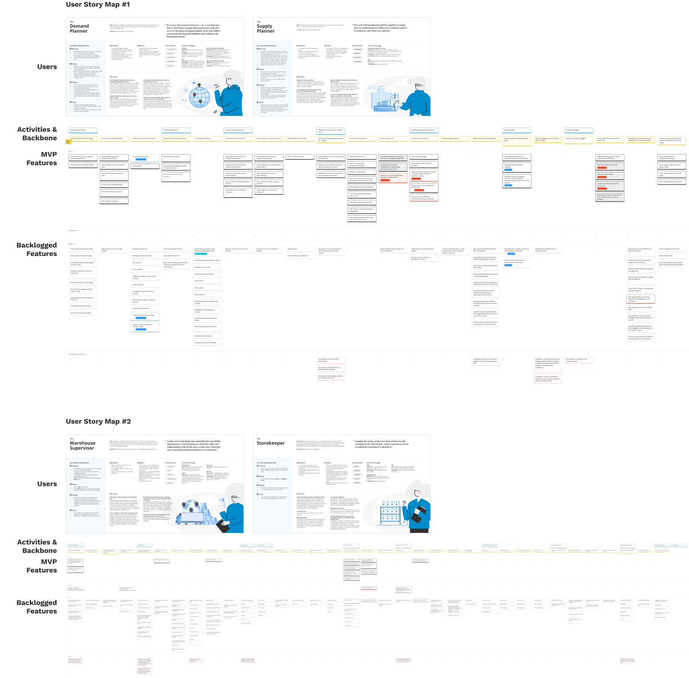

Chapters:
At West Monroe, I worked on a material tracking and forecasting tool. A challenging problem space taught me the importance of asking questions.
Figma, Miro, Jira
Jun - Aug 2023 (3 Months)
In the summer of 2023, I interned at West Monroe, a consulting firm that brings together consultants from various fields of study to create great things for clients. For NDA purposes, some screenshots remain blurred.

The client has been dealing with a material tracking issue and needs help to keep pace with demand through their warehousing system. The client uses word of mouth and emails rather than rely on their inaccurate and poorly designed systems.

West Monroe has been working with the client since January 2023. From then to mid-June, the client and West Monroe proposed the solution of a material tracking and forecasting dashboard. The tool's target users are 30+ warehouse supervisors and other critical warehouse management roles.

The previous phase's mockups had assumptions and lacked development optimization. As such, my team plans to disassemble the past mockups and redesign the functionalities based on concrete research. Once again, my team will work with the client team (comprised of business/design/tech leads, designers, and engineers).

I assisted 5 designers with analogous research, wireframing, and prototyping. I also took on research responsibilities like synthesizing research, persona editing, and stakeholder mapping. Lastly, a team of subject matter experts (SME) provided us with insider knowledge of the energy industry.

Since the workshop will use personas for validation, the team analyzed the previous phase’s research to ensure the personas were fresh. To aid the team, I reviewed recordings and notes of past interviews with future users, created 2 new personas, and updated the existing 8.

While analyzing research, my team and I faced a challenge in grasping the client’s warehousing system due to evolving definitions and vague responsibilities of future users. Thus, I crafted a visual that outlined how each user persona interacted with the warehousing supply chain.

The team conducted 2 user story mapping exercises with the client and 4 future users on Miro. Due to similarities between the 4 primary stakeholders, the workshop split into two sessions, each focused on 2 stakeholders. All features began in the backlog, and some moved into the MVP section after discussions.
I designed 20+ Miro slides for the workshop. In addition to the user story mapping exercise, some boards facilitated icebreaker activities, while others collected participant thoughts. During the event, I synthesized findings, assisted participants with technical issues, and maintained detailed notes.
Post-workshop tasks involved working with the client team to synthesize MVP features to fuel 8 two-week design sprints, and I participated in the first 2. Sprints one and two focused on the global navigation and search functions through analogous research, wireframing, and receiving feedback from the client for 4 weeks.
Following a team discussion to align on sprint goals, solution significance, and target audience, I designed 12+ wireframes. Throughout the sprints, I presented to the team in several feedback meetings where I outlined my analogous research applications and justified my design decisions.

My team created the mid-fi wires with the client's design system in mind to ensure everyone is on the same page during design presentations with the client team. Additionally, I jump-started the order and material tracker wireframes to give my team more time to receive client feedback.


I collaborated with the client and my team to review our performance in recent sprints. I suggested improving the efficiency of the 20-person stand-up meetings by using the raise hand feature in virtual meetings, which was adopted as a standard practice, reducing meeting times by 20%.

This experience pushed my learning to the limits. I was new to a project and had to consume half a year’s work in mere weeks before diving head first into a sophisticated problem space in the energy industry, a sector in which I had no knowledge or experience.
However, by accepting that I needed to learn quickly, I absorbed knowledge and built a solid understanding by communicating with the people around me. I learned to convert insights into curiosity, like asking the five whys, leading me to take on vital tasks.
Because of this, I contributed to the team, exceeding the set expectations of success. During the second sprint, my team and I were further ahead than expected. So, we brought in more tasks from sprint three for greater efficiency and to cover potential future hiccups.